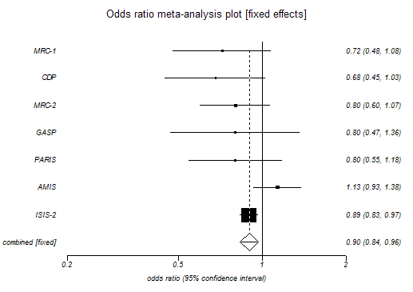
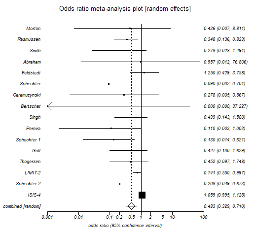

Forest (Meta-analysis) Plot
Menu location: Graphics_Forest (Cochrane).
This plots a series of lines and symbols representing a meta-analysis or overview analysis.
StatsDirect uses a line to represent the confidence interval of an effect (e.g. odds ratio) estimate. The effect estimate is marked with a solid black square. The size of the square represents the weight that the corresponding study exerts in the meta-analysis; this is the Mantel-Haenszel weight.
The pooled estimate is marked with an unfilled diamond that has an ascending dotted line from its upper point. Confidence intervals of pooled estimates are displayed as a horizontal line through the diamond; this line might be contained within the diamond if the confidence interval is narrow. You may define more than one pooled effect estimate to represent sub-groups (use a value > 0 in the pooling indicator to do this).
To prepare a forest plot in StatsDirect you must first enter a list of effect estimates in a workbook. You must also prepare matching columns of lower and upper confidence limits. Thus we have three columns of equal length in a workbook for these data. You can also prepare a matching column of sample sizes or weights but this is optional.
A further optional column can be used to indicate which of the effect estimates and their confidence limits are pooled. A pooling indicator of 0 represents an individual study, < 0 (e.g. -1) indicates an overall pooled result (there should be only one) and > 0 (e.g. 1) indicates a pooled subgroup. If no pooling indicator variable is selected then all are assumed to be individual studies.


This plot can be put to other uses. Please note that you can annotate it using an external presentation package such as Microsoft Powerpoint. To annotate a StatsDirect graph in Microsoft Word just copy it from StatsDirect to Word using the clipboard and double click on it in Word.
Note that L'Abbé plots can be more useful that the plots above for exploring the heterogeneity of effects in a meta-analysis (Song, 1999).